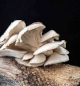

Grzyby Jadalne
- Pieczarka dwuzarodnikowa (pieczarka)
- czubajka kania (kania)
- borowik szlachetny (prawdziwek)
- xerocomus (podgrzybek)
- pieprznik jadalny (kurka)
- pleurotus (boczniak)
- trufla letnia (trufla)
Polecamy do Zup
- prawdziwek, rodzina:borowikowate
- podgrzybek, rodzina:borowikowate
